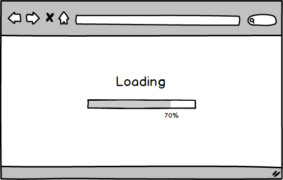
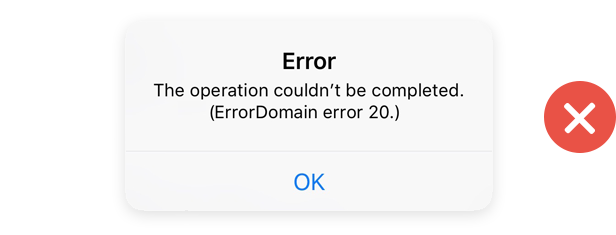
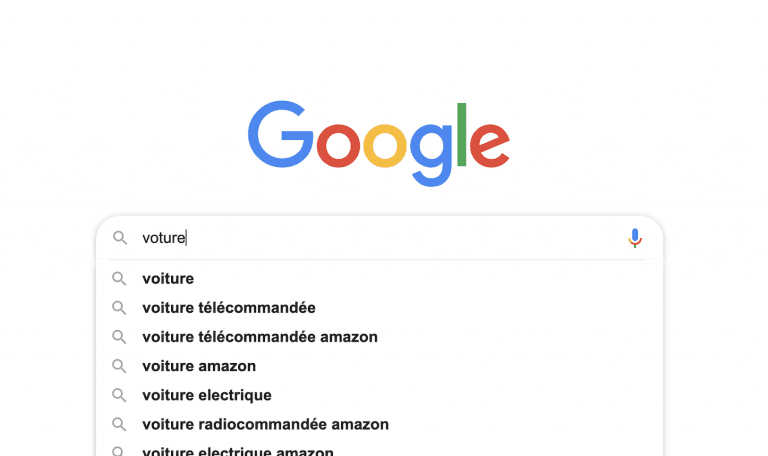
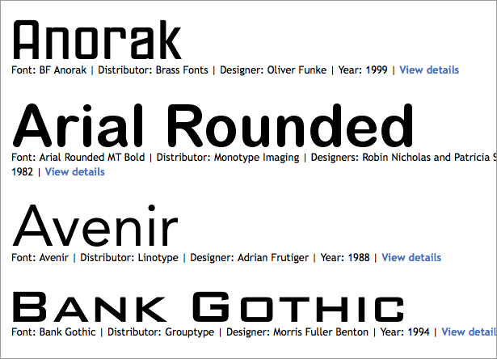
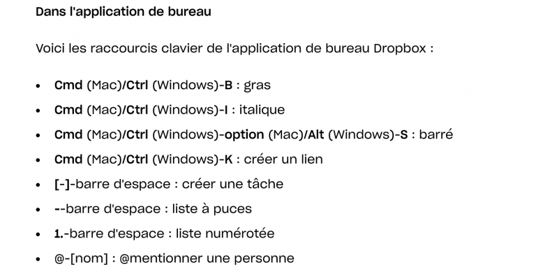
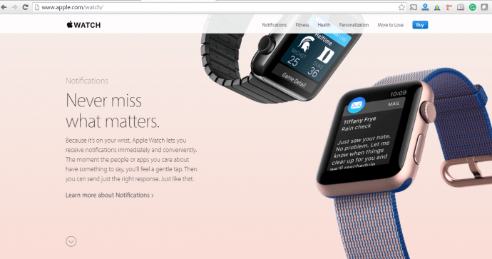
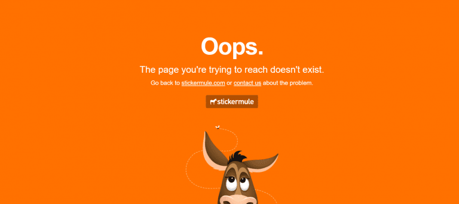
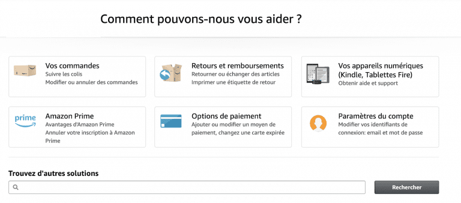

👨🏼🎓 BSc en Ingénierie des médias (2017)
👨🏻💼 Media Engineering Institute (MEI) & Consultant indépendant
Chercheur UX/UI - Production de contenu - Médiation / Facilitation digitale
--------------
📱🎮🎥✒UX / Gamification / Conception d'interface / Création de contenus / Audiovisuel / Podcasts
UX/UI design
Développement web & mobile
Data visualization
Architecture web, Infrastructure & déploiement
Marketing Digital & E-Commerce
Production de contenus média
Évaluation de produits médias
Recherches UX
Gestion de projet, gestion d'équipe
Business model, Business plan & Startup
Évaluation et définition de processus
Approche systémique
Veille digitale & sociétale
Méthodologie de recherche
Communication interpersonnel & travail en équipe
Expression, présentation
Droit & éthique
Un réseau de communication pour les dominer tous
👨🏻 🖥 ➡ 📧 🖥 👩🏽
QWERTYUIOP
Ray Tomlinson
📶
Tous les jours, vous "parlez" le TCP
📬
Domain Name System
ou la création de "La Poste" virtuelle
1000 💻 connectés
📈
+10'000 💻 connectés
📈
+100'000 💻 connectés
🌐
HTTP + HTML
ARPANET ➡ Internet
Tim Berners-Lee - CERN
Tim Berners-Lee - CERN
📈
+1'000'000 💻 connectés
📈
+36'000'000 💻 connectés
📈
+368'340'000 💻 connectés
💥
La chasse aux innovations technologique fait rage
Les entreprises du web se développent
La bourse s'affole
Les géants du web survivent
| 📳 | 📂 | 📰 | 🛠 | 🔄 | 🚶🏽♀️ |
+24'000'000'000 de périphériques connectés
(presque) Tout le monde possède un ou plusieurs périphériques connectés
29 Teraoctet de données sont publiées chaque seconde à travers le monde
L'information est omniprésente
Des milliards d'applications web et mobile sont à notre disposition
La société, l'économie et la politique évoluent avec les technologies digitales
Ces technologies digitales nous accompagne partout
Ou sommes-nous de simples consommateurs ?
et aborder la transition numérique de la meilleure manière
Apprendre de nouveaux languages (HTML, CSS, Javascript, PHP, ...)
Voir et comprendre "le dessous des interfaces"
Comprendre comment l'être humain intéragit avec la technologie
Savoir comment communiquer un message, à qui, sous quelle forme, et pourquoi
Développer un regard critique
Une application pour envoyer des cadeaux à vos amis
Par groupe de 2 personnes
Nous discuterons de vos propositions ensemble
Pendant 10 minutes, tentez de terminer le jeu et notez tous les éléments qui ne vont PAS dans l'interface
👴🏻 Jakob Nielsen est un expert dans le domaine de L'ergonomie et de l'utilisabilité des sites web. Il est le cofondateur, avec Donald Norman, du Nielsen Norman Group, une société de conseil et recherche dans le domaine du UX, dont le site internet est une vraie pépite pour un designer qui cherche à se documenter.
💬 Les heuristiques de Nielsen se composent en 10 critères, qui attestent la bonne ergonomie et la bonne utilisabilité d'une interface
PS : Nous ne feront qu'effleurer le sujet...
PS2 : les exemples proviennent de https://www.studiocassette.com
L’état du système est visible
🚦
Le système correspond au monde réel
🚧
L'utilisateur a un sentiment de contrôle, il est libre de ses actions
⏪▶
Le système respecte les standards
🐍
Le sytème prévient les erreurs
🛑
Reconnaître plutôt que se souvenir
👶🏻 ➡ 👵🏼 ⁉
Le système est flexible dans son utilisation
🚗 🛵 🛴 🚲 🚆
Esthétique et design minimaliste
🅰➡🅱
Gestion et identification simple des erreurs
👮🏼♀️
Aide et documentation
📄
l'UX et l'UI ne sont que 2 domaines de compétence d'un-e ingénieur-e des médias
L'ingénieur-e en média est un-e généraliste
mais expert-e dans la compréhension de l'écosystème digital
(marketing, programmation, technologies, design visuel, UX / UI, communication,...)
Capable d'analyser, concevoir, créer et diffuser de l'information
Son parcours définira son ou ses domaines d'expertise dans le monde du digital
Le digital faisant partie intégrante de nos vies privées et professionnelles,
l'ingénieur-e des médias
saura trouver sa place quelque soient ses centres d'intérêts !
Et bonne suite !